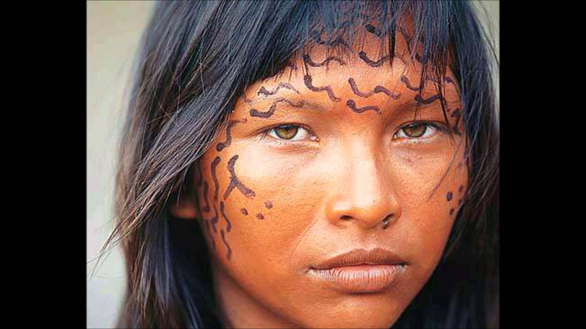

15 de noviembre, Umbanda homenajea al Caboclo de las 7 Encrucijadas
Para iniciar nuestra conversación sobre las religiones afro-brasileras, como el caso que nos nuclea (Umbanda)
debemos considerar que entraremos en un universo multicolor en que varias culturas diferentes se entrelazan,
sin prejuicios ni preconceptos raciales y étnicos,
con sus varias formas de comprender y vivenciar la religiosidad,
a través de sus aspectos metafísicos y cosmológicos sobre la creación.
Seguramente, la gran mayoría de los que hoy estamos presente en este evento concordemos
en que Umbanda es originaria de Brasil, o sea, americana.
Seguramente también los aquí presente, concordemos que ella surge en un momento histórico,
político y cultural muy especial para Brasil y toda América Latina.
Si observamos la historia del hombre y las religiones,
encontraremos que ellas han surgido en momento de profunda tensión,
tanto espiritual como social, y Umbanda no es la excepción a esa regla.
Umbanda descendió y se manifestó a través de un largo proceso de construcción colectiva,
que no tiene principio ni tiene fin, y para mostrarnos que el mundo espiritual no tiene preferencias
de pueblos, color, o razas elegidas, mucho menos iluminados, avataras, o profetas.
Sus mentores espirituales, Pretos Viejos, Caboclos y Crianzas,
simbolizan la unidad que debe primar entre las diferentes poblaciones,
clases sociales y las etapas de vida que cada uno de nosotros transitará.
De acuerdo con esta premisa, podemos decir que Umbanda por ser una Religión universal,
pues, descendiente desde los planos espirituales superiores,
(donde los apegos individuales, de razas y sociales, prácticamente no existen) tiene como principal objetivo
la inclusión y aceptación de todas las formas de percibir y cultuar lo sagrado,
lo que estaría en oposición, con un mito de fundación,
que es exactamente lo contrario a todo lo que Umbanda significa y representa: libertad e igualdad.
De ello surgen y evolucionan diferentes corrientes umbandistas originadas de las culturas indígenas,
africanas e indo europea, ninguna con más valor que la otra1.
¿Cómo encajaría entonces, un mito de fundación cuando el propio mito decreta características puntuales y particulares
de quien está naciendo?
Los mitos de origen son el soporte principal de las religiones llamadas de libro,
cuyas teologías se estructuran en una figura histórica o mítica, es decir, un mesías,
en el cual se centraliza la propuesta religiosa.
El mito de origen, confronta con el surgimiento de una Religión que proviene de las esferas espirituales,
como sin dudas es “Nuestra Umbanda”2.
De manera que, imponer un mito de fundación, directa o indirectamente,
es promover un proceso de generalización de Umbanda bajo la óptica de una sola vertiente, o cosmos visión3.
Definiendo, la población brasileña se fue construyendo con el aporte cultural de las poblaciones autóctonas,
africanas, e indo europeas, que a su vez promovieron el mestizaje étnico,
a pesar de los esfuerzos del poder imperial primero y la República después por imponer el mantenimiento de la raza pura y la religión única.
A este proceso se lo llamó: “blanqueamiento” en que el gobierno de Brasil viendo el crecimiento de la población afro e indígena,
estimulan la llegada de pobladores europeas, indúes y orientales para detener el avance cultural de las naciones afro-indígenas,
consideradas atrasadas, incivilizadas y decadentes.
Dentro de este contexto surge y evoluciona Umbanda precisamente en medio de las poblaciones menos favorecidas de la sociedad brasileña,
indígenas, afros, mulatos y blancos pobres, en que sus culturas se aproximaron y fueron creando el sincretismo religioso,
que a la postre se consolidó en Umbanda.
De manera que, este bricolag formado por el culto a los Orixás e Inquices, encantados, Entidades amerindias, espiritismo bantú congolés,
espiritismo kardecista y el cristianismo popular se fusionaron al igual que sus pobladores,
aproximando sus creencias que se identificaron unas con otras, creando los colectivos religiosos afro-brasileros.
Según interpretamos, Umbanda es una forma inteligente de amalgamar varias influencias culturales, sin predominancia de unas sobre otras,
en fin, no existe un proceso de exclusión, ni de aculturación, como sostenía Roger Bastides4, por lo tanto,
no existen sub culturas dentro de los colectivos afro-umbandistas.
Según Umbanda, la obra de Nzambi, el creador, no está aún terminada, todo y todos estamos en proceso de cosmogénesis,
porque estos eventos cósmicos que se manifiestan en el macro cosmos, también se repiten en el micro cosmos,
con cada uno de nosotros.
El ser humano, proviene de un largo proceso biológico (biogénesis)5 en que si no fuese por los elementos que de la naturaleza provienen,
no existiría.
Bien lo sabían y lo saben, tanto africanos como indígenas que recurren a ella con el fin de extraer el Axè:
(Poder de realización) que reequilibrara nuestras energías emergentes.
En este 15 de noviembre, queremos resaltar que la Umbanda instaurada por Zelio Fernandino de Moraes,
es una más entre muchas otras la cual, debido a su identificación con el cristianismo y kardecismo,
obtuvo una mayor tolerancia de la cultura dominante de la sociedad brasileña, letrada, blanca y científica.
Con todo el respeto y agradecimiento que nos merece el CABOCLO DE LAS 7 ENCRUCIJADAS,
Zelio Fernandino De Moraes y los seguidores de este memorable día en que esta Portentosa Entidad Espiritual,
desveló el término UMBANDA y fundó la Umbanda blanca o kardecista;
en este día también, queremos reivindicar la figura de dos médiums que aportaron mucho en la construcción de nuestra
Religión y que la historia oficial umbandista ha olvidado, o simplemente no los conoció: JOAO DE CAMARGO Y JUCAS ROSAS.
Cabe destacar en este, y en todos los casos, las palabras vertidas por quien se dio a llamar: Caboclo de las 7 Encrucijadas,
y es el hecho de que inmediatamente a su manifestación en aquella mesa kardecista, lo primero que hizo fue tomar distancia de aquella práctica
y utilizar el término Caboclo para autodefinirse, término absolutamente discriminado y quien lo portase o lo mencionara era pasible de ser duramente sancionado.
Es más, en su mensaje advirtió que él abriría una tienda (nuestra señora da concepción) donde quienes lo acompañaron esa noche (Espíritus de Negros Viejos y Caboclos)
tendrían su espacio para transmitir sus mensajes6.
En una sociedad clasista, racista y cristiana o mejor dicho, católica, como lo es Brasil ¿existiría la posibilidad de que un negro, mestizo o indio pudiesen legitimar Umbanda, una religión patrimonio de los brasileros?
Seguramente el mundo espiritual ya tenía percibido esto y tomó la precaución de que esta Entidad Espiritual surgiera en un espacio social y cultural que le permitiese la expansión de Umbanda con menos dificultades.
No sería de extrañar entonces que, Zélio Fernandino De Moraes, hijo de kardecista, cristiano y blanco,
fuese el médium indicado para la tarea de legitimación de nuestra Religión, cosa que, (como advertíamos anteriormente)
no le hubiese sido fácil a un mestizo, indio o negro.
Y si no, veamos las siguientes historias que les vamos a contar:
Por todo lo expresado, los integrantes del Centro Umbandista Reino Da Mata, queremos finalizar diciendo que para nuestro centro, Umbanda es una unidad abierta en constante relectura, reinterpretación y readecuación de sus valores y principios, contemplando y acompasando la evolución del hombre, del Planeta y la naturaleza.
Volver